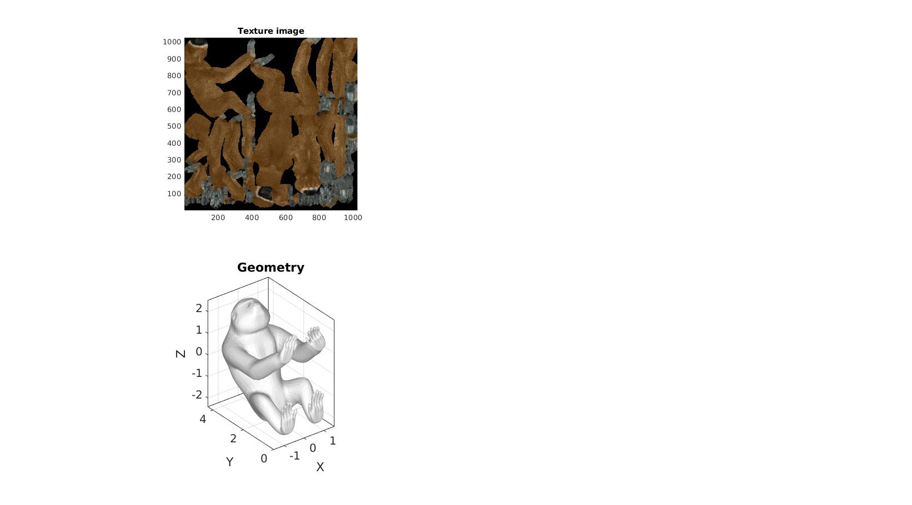

DEMO_obj_resample_texture
Below is a demonstration for:
- Importing an OBJ file including texture
- Resampling the OBJ file and the texture
Contents
clear; close all; clc;
Syntax
[F,V,C]=import_obj(fileName);
Description
This function imports the geometry (faces and nodes0 contained in an OBJ file. All texture/material data is ignored.
Examples
defaultFolder = fileparts(fileparts(mfilename('fullpath'))); loadPath=fullfile(defaultFolder,'data','OBJ'); testCase=1; switch testCase case 1 modelName='gibbon.obj'; case 2 modelName='test.obj'; case 3 modelName='lego_figure.obj'; end fileName=fullfile(loadPath,modelName);
objStruct=import_obj(fileName); F=objStruct.F; V=objStruct.V; C=objStruct.C; F_uv=objStruct.F_uv; ij_M=objStruct.ij_M; m=objStruct.m;
hf=cFigure; subplot(2,2,1); hold on; title('Texture image'); image(m); axis tight; axis square; subplot(2,2,3); hold on; title('Geometry'); gpatch(F,V,'w','none'); axisGeom; camlight headlight; drawnow;
hf=cFigure;
subplot(2,2,[2,4]); hold on; hp=gpatch(F,V,C,'none'); axisGeom; %camlight headlight; drawnow;
%Populate the animStruct subdevMethod=2; ns=[0 1 2 3]; nSteps=numel(ns); %Number of animation steps animStruct.Time=linspace(0,1,nSteps); %Create the time vector for q=1:1:nSteps [Fs,Vs,Fs_uv,ij_Ms]=subdevTexture(F,V,F_uv,ij_M,ns(q),subdevMethod); Cs=textureCoord2FaceColor(Fs_uv,ij_Ms,m,'face-center'); %Set entries in animation structure animStruct.Handles{q}=[hp(1) hp(1) hp(1) hp(2) hp(2) hp(2)]; %Handles of objects to animate animStruct.Props{q}={'Faces','Vertices','FaceVertexCData','Faces','Vertices','FaceVertexCData'}; %Properties of objects to animate animStruct.Set{q}={Fs{1},Vs,Cs{1},Fs{2},Vs,Cs{2}}; %Property values for to set in order to animate end
Viewing the animation. By calling anim8 a GUI is created in the specified figure. An anim8 scrollbar and buttons appear to interact with the animation. There is a play/stop button, a timing adjustment button, a bounce button, and an export gif button. Press the questionmark button to get help on these buttons.
Start anim8 gui
anim8(hf,animStruct);

GIBBON www.gibboncode.org
Kevin Mattheus Moerman, gibbon.toolbox@gmail.com
GIBBON footer text
License: https://github.com/gibbonCode/GIBBON/blob/master/LICENSE
GIBBON: The Geometry and Image-based Bioengineering add-On. A toolbox for image segmentation, image-based modeling, meshing, and finite element analysis.
Copyright (C) 2006-2023 Kevin Mattheus Moerman and the GIBBON contributors
This program is free software: you can redistribute it and/or modify it under the terms of the GNU General Public License as published by the Free Software Foundation, either version 3 of the License, or (at your option) any later version.
This program is distributed in the hope that it will be useful, but WITHOUT ANY WARRANTY; without even the implied warranty of MERCHANTABILITY or FITNESS FOR A PARTICULAR PURPOSE. See the GNU General Public License for more details.
You should have received a copy of the GNU General Public License along with this program. If not, see http://www.gnu.org/licenses/.